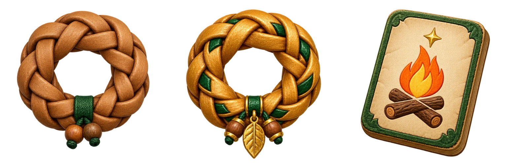

A Birthday Every Day
Swipe a woggle up to invite your new friend

Your next adventure is just down the trail.
PartyPoss joined your patrol.
+2 story cards · +1 Golden Woggle
Your first trail friend is waiting in the meadow.
Saved on this device.
Type advantages: Fire → Grass → Earth → Air → Water → Fire. Fairy is neutral. In encounters: Space to offer · B story card · U switch woggle · M Maui Wali.
AR uses a live camera background. The camera icon saves a photo. The practice grove and trail book work offline after a full first visit. Live maps need internet access. Stop walking before interacting.
An independent fan game. Not affiliated with Scouting America or Pokémon. Location is optional; choose the practice grove to play without GPS.
The rest are waiting out on the trail.
You can collect all eight. This is just the beginning.